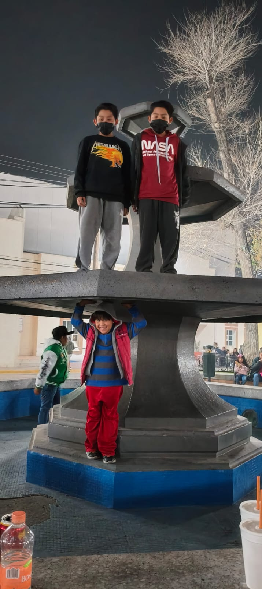

Mi mamá es una de esas personas que no necesitan decir mucho para demostrar cuánto nos quiere. Aunque no siempre se lo decimos o lo reconocemos como deberíamos, ella está ahí, todos los días, haciendo lo imposible por nosotros. No importa si está enferma, cansada o molesta con nosotros; ella se levanta con la misma fuerza para atendernos, cuidarnos y darnos lo mejor que puede, incluso cuando a veces nosotros le pagamos con enojos, silencios o malos ratos que no se merece.
Tiene una paciencia que ya quisiéramos muchos, una capacidad de perdonar que parece infinita, y una voluntad enorme de mantenernos unidos, alimentados, seguros. A veces parece que lleva todo el mundo encima, pero no lo dice. Se guarda su dolor y sigue como si eso no le afectara en lo absoluto.Solo que nos ama tanto, que prefiere aguantar antes que preocuparnos má.
Y aunque muchas veces la lastimamos sin querer, ella nunca deja de ser nuestra madre. La que sostiene todo. La que se olvida de sí misma con tal de que no nos falte nada. Mi mamá es todo para mi y no me perdonaria si algo le pasa.
Mi papá es un hombre trabajador, de esos que desde temprano ya están de pie, con la mente ocupada en todo lo que tiene que hacer por su familia. Es serio, firme, con un carácter fuerte que a veces impone, pero que también da seguridad. No es de los que dicen “te quiero” a cada rato, pero se le nota en la forma en que se esfuerza, en cómo cuida, en lo mucho que se parte el alma para que no nos falte nada. A veces siento que no me entiende del todo. Discutimos, choco con su manera de pensar, y hay momentos en los que no me deja explicarle lo que de verdad pasó. Como si ya tuviera una idea fija y no quisiera escuchar más. Y eso duele, porque uno también quiere ser escuchado. Pero también sé que él está haciendo lo mejor que puede, que su forma de demostrar cariño es distinta, más callada, más dura...pero real. Y aunque sea serio, también tiene su lado relajado. De repente se suelta, se ríe con nosotros, bromea o se pone a contar historias. Esos momentos valen oro, porque ahí es cuando uno siente que está cerca, que está siendo papá no solo con responsabilidad, sino con cariño. Es cuando se rompe esa barrera y se convierte en nuestro cómplice, aunque sea por un rato. Mi papá es de esos que enseñan con el ejemplo. No se rinde, no se queja. A veces no entendemos su forma de pensar, pero en el fondo sabemos que lo hace todo por nosotros. Porque nos quiere, aunque no siempre lo diga. Porque nos cuida, a su manera. Y porque en su mundo serio y exigente, hay un espacio que solo guarda para hacernos sentir que somos su mayor orgullo.
Con Joshua, mi hermano, tengo una relación que ha cambiado mucho con el tiempo. Cuando éramos más pequeños, me llevaba súper bien con él. Jugábamos, convivíamos bastante. Pero conforme fuimos creciendo, como que todo cambió. Ya no jugábamos tanto como antes, cada quien fue agarrando su espacio, y la convivencia distanciando. Hoy en día, siento que casi todo lo que hago le molesta. Se enoja por cualquier cosa, como si siempre estuviera de mal humor. Si le hablas, muchas veces te contesta de forma enojada, con mala gana, aunque no sea grosero. Eso sí, no todo es malo. Cuando está tranquilo, es otra persona. Se relaja, empieza a convivir, hasta se pone a jugar videojuegos conmigo o a bromear. En esos momentos, se siente más cercano, como antes. Ahí sí da gusto estar con él. Pero no pasa tan seguido. La verdad, nuestra relación está más o menos.Ya que aveces tenemos momentos buenos y malos pero sigue siendo mi hermano y yo lo quiero mucho al igual que a mis otros dos hermanos, haunque sea un horror cuando se enoja con migo pero es muy buena persona ya que tienes mucho tiempo de conocerlo y siempre estare con el y mis otros dos hermanos cuando lo necesiten.
Jared es ese hermano súper relajado, de los que no se toman casi nada tan en serio, y que siempre tienen una broma lista para soltar. Le gusta hacer reír, hacer comentarios chistosos, y muchas veces logra que el ambiente se sienta más ligero solo con su forma de ser. A veces parece que nada lo estresa. Claro, también tiene ese lado que a veces desespera. Porque sí, cuando le agarra por molestar, no para. Y lo peor es que sabe exactamente qué cosas me enojan... y las hace. Aunque uno le diga que ya, que se calme, él sigue y sigue como si nada. Hay días que eso me cae mal, pero en el fondo sé que no lo hace con mala intención, solo que a veces no mide. Mi relación con él siempre ha sido buena. Como él y Joshua son gemelos pues basicamente me la pasaba con ellos. Antes convivíamos mucho los tres, y aunque las cosas han cambiado con el tiempo, yo diría que con Jared todavía hay buena convivencia. No es como antes, pero nos seguimos llevando bien. Hay bromas, risas, y aunque ya no juguemos como antes, todavía se siente esa conexión de hermanos. Jared tiene una personalidad única. Aunque a veces se pase con sus bromas, también es de esos hermanos con los que se puede pasar un buen rato, reírse de cualquier tontería y sentirse a gusto haunque claro tambien tiene sus momentos de enojo.
Abdel es el mas pequeño de mis tres hermanos que tengo y al que mas tiempo me toco cuidar ya que a los gemelos ya no los cuide tanto tiempo ya que cuando ellos habian nacido yo tenia solo tres años, en cambio cuando nacio Abdel yo tenia ocho años y cuando tenia diez años lo empece a cuidar, claro no todo el tiempo, pero me toco mas tiempo estar con el a comparación que con mis otros dos hermanos, por lo que me llevo muy bien con el y siempre convivo con el ya que la gran parte del tiempo se la pasa abajo en la sala y cuando bajo pues estoy con el,ya sea jugando o vienddo como dibuja o hace su tarea, haunque ya no tengo tanto tiempo para jugar con el, trato de hacer lo´posible para estar un rato con el ya que al ser el menor no tiene con quien jugar o pasar el rato.
| Nombre | Parentesco | Lección o valor que me ha enseñado |
|---|---|---|
| Myriam | Mamá | A no rendirme nunca, incluso cuando todo parece estar en mi contra |
| Jose Alfredo | Papá | Que las cosas se demuestran con hechos, no con palabras |
| Joshua | Hermano | Ser paciente y tolerante |
| Jared | Hermano | Que aunque uno esté enojado, siempre se puede reír un poco |
| Abdel | Hermano menor | A darme tiempo para jugar y cuidar de quienes me rodean |